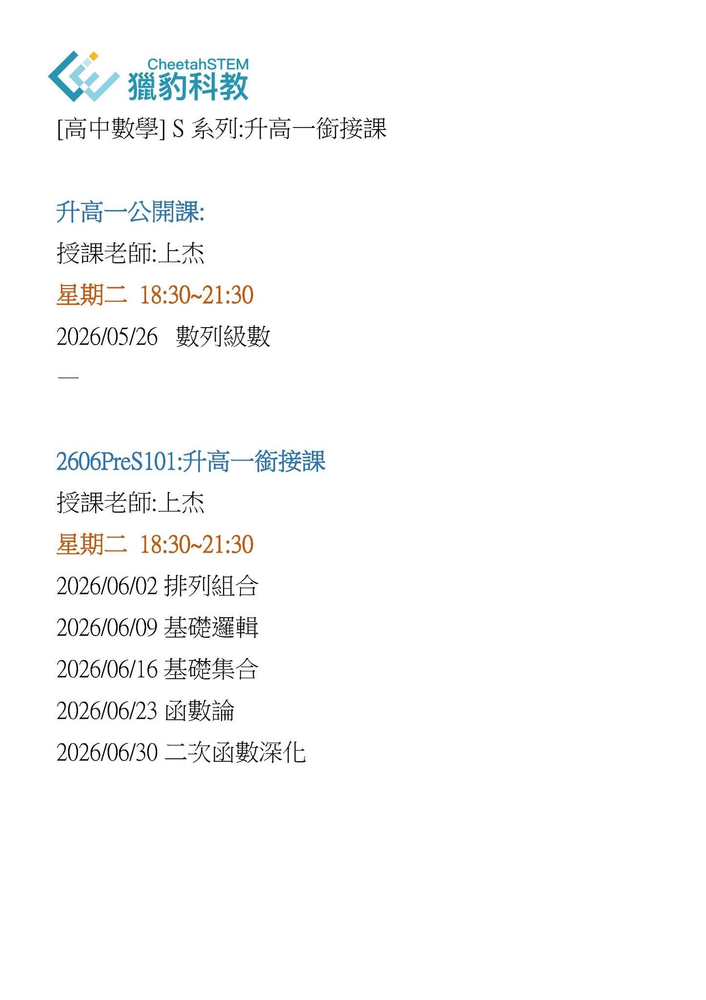
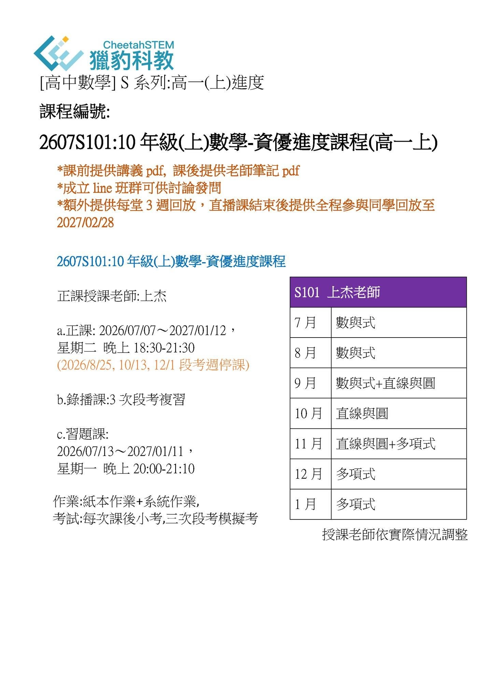
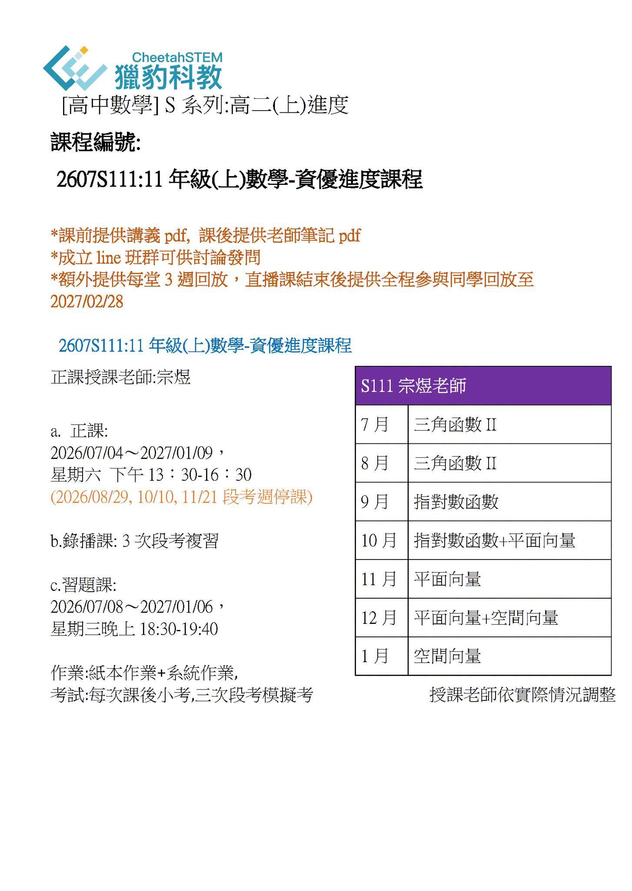
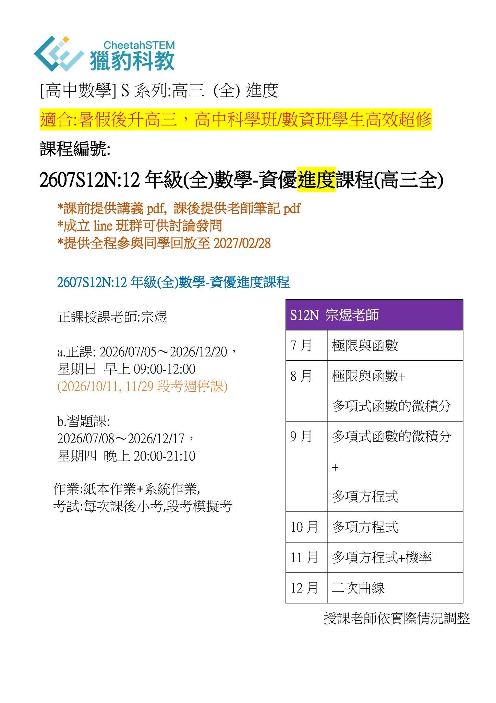

2026/07 獵豹S101高一(上)、S111高二(上)、S12N高三開跑!
■ FB本文按讚留言並加入獵豹客服官方Line： ID：@492bjsgw，或者掃描QR code(見底下留言)
■ 新生需要試上請按讚留言「試上+1」並加入獵豹官方line姓名學校年級，以及預計要參與的獵豹課程
【班課編號】
2606PreS101:升高一銜接課
2607S101:10年級(上)數學-資優進度課程(高一上)
2607S111:11年級(上)數學-資優進度課程(高二上)
2607S12N:12年級數學-資優進度課程(高三全)
S系列：獵豹高中資優數學課程
1.包含完整108課綱+ 保留舊課綱精華+加深加廣課程；
2.包含明星高中、輕競賽、二階筆試、世界各國精彩題型...彙總。
同學們的學習從頭開始，扎實前進！
☗升學‧競賽‧素養
☞ 最具國際觀、前瞻性、挑戰性、精英特質。
☞ 選擇獵豹，無需在公立和私立之間猶豫，我們提供最優質、最高水平的教學。
☞ 選擇獵豹，無需感嘆孩子是否在數理資優班，我們提供最完整的教育資源。
☞ 選擇獵豹，無需擔心城鄉資源落差，我們有華人最頂尖的教師。
☞ 選擇獵豹，享受全台灣最頂尖的同儕互動、最深入精彩的課程體驗，還有由授課老師親自回答問題的專屬輔導機制。
【S系列課程目標】：
☞系統性教授高中三年課程。
☞進入頂尖大學理工醫科。
☞訓練並鼓勵學生參加AMC、TRML、學科能力競賽等知名競賽及TMT、APX數學檢定，充實學習履歷。
☞培養頂大理工科系、二階段筆試實力。
☞建立學生赴香港、中國大陸、歐美名校深造的全球競爭力。
【課程規劃】
升高一公開課:
授課老師:上杰
星期二 18:30~21:30
2026/05/26 數列級數
2606PreS101:升高一銜接課
授課老師:上杰
星期二 18:30~21:30
2026/06/02 排列組合 2026/06/09 基礎邏輯 2026/06/16 基礎集合 2026/06/23 函數論 2026/06/30 二次函數深化
2607S101:10年級(上)數學-資優進度課程
正課授課老師:上杰
a.正課: 2026/07/07～2027/01/12， 星期二 晚上18:30-21:30 (2026/8/25, 10/13, 12/1段考週停課)
b.錄播課:3次段考複習
c.習題課: 2026/07/13～2027/01/11， 星期一 晚上20:00-21:10
作業:紙本作業+系統作業, 考試:每次課後小考,三次段考模擬考
※習題課配合正課停課
※作業：紙本作業+系統作業 考試：課後小考，三次段考模擬考
※課前提供講義pdf，課後提供老師筆記pdf 成立line班群可供討論發問
※額外提供每堂3週回放，直播課結束後提供全程參與同學回放至2027/02/28
※遇段考/停課事先於班群宣布停課
2607S111:11年級(上)數學-資優進度課程
正課授課老師:宗煜
a.正課: 2026/07/04～2027/01/09， 星期六 下午13:30-16:30 (2026/08/29, 10/10, 11/21段考週停課)
b.錄播課: 3次段考複習
c.習題課: 2026/07/08～2027/01/06， 星期三晚上18:30-19:40
作業:紙本作業+系統作業, 考試:每次課後小考,三次段考模擬考
※習題課配合正課停課
※作業：紙本作業+系統作業 考試：課後小考，三次段考模擬考
※課前提供講義pdf，課後提供老師筆記pdf 成立line班群可供討論發問
※額外提供每堂3週回放，直播課結束後提供全程參與同學回放至2027/02/28
※遇段考/停課事先於班群宣布停課
2607S12N:12年級數學-資優進度課程
正課授課老師:宗煜
a.正課: 2026/07/05～2026/12/20， 星期日 早上 09:00~12:00 (2026/10/11, 11/29 段考週停課)
b.錄播課: 2次段考複習
c.習題課: 2026/07/16～2027/12/31， 星期四 晚上20:00-21:10
作業:紙本作業+系統作業, 考試:每次課後小考,二次段考模擬考
※習題課配合正課停課
※作業：紙本作業+系統作業 考試：課後小考，二次段考模擬考
※課前提供講義pdf，課後提供老師筆記pdf 成立line班群可供討論發問
※額外提供全程參與同學回放至2027/02/28
※遇段考/停課事先於班群宣布停課
【課程費用】
2606PreS101：升高一銜接課
定價：NT$5000/人
2607S101：10年級(上)數學-資優進度課程（高一上）
定價：NT$30000/人
〔 a方案 〕：針對J91A/J92A舊生
〔b方案〕：不符合a方案者，可享以下三種優惠組合
☞團報或分享文：
兩人或公開分享指定兩文：NT$28100/人
三人或公開分享指定三文：NT$25100/人
四人或公開分享指定四文：NT$23100/人
☞b方案早鳥： 2026/05/28前報名S101，可享NT$2,000/人之減免，並贈送preS101升高一銜接數學銜接講座。
☞b方案舊生：獵豹課程舊生減免NT$500/人
2607S111：11年級(上)數學-資優進度課程(高二上)
定價：NT$30000/人
〔 a方案 〕：針對S102舊生
〔b方案〕：不符合a方案者，可享以下三種優惠組合
☞團報或分享文：
兩人或公開分享指定兩文：NT$28100/人
三人或公開分享指定三文：NT$25100/人
四人或公開分享指定四文：NT$23100/人
☞b方案早鳥： 2026/05/28前報名S111，可享NT$2,000/人之減免
☞b方案舊生：獵豹課程舊生減免NT$500/人
2607S112N：12年級數學-資優進度課程
定價：NT$30000/人
〔 a方案 〕：針對S112舊生
〔b方案〕：不符合a方案者，可享以下三種優惠組合
☞團報或分享文：
兩人或公開分享指定兩文：NT$28100/人
三人或公開分享指定三文：NT$25100/人
四人或公開分享指定四文：NT$23100/人
☞b方案早鳥： 2026/05/28前報名S12N，可享NT$2,000/人之減免
☞b方案舊生：獵豹課程舊生減免NT$500/人
【課程報名步驟】
報名步驟：請務必完成填寫1、2步驟表單，方完成報名程序
2.請填寫「2607S 報名單」
※2607S101 高一上 報名表
※2601S111高二上報名表
※2601S12N高三報名表



